KONTAK
UNDUH
GALERI
TENTANG
BERANDA
Perjalanan Whulandary Herman Meraih Mahkota Putri Indonesia 2013
Berita Terpopuler
Informasi Pendidikan/Pelatihan Diklat Operator Menjahit
Rencana Umum Pengadaan (LPSE Kota Jakarta)
Juara Lomba Artikel Kepemudaan
Laporan Ringkasan APBD T.A 2012
Daftar Nominatif Tenaga Honorer Kategori I
Daftar Klulusan Peserta Ujian Kompetensi Awal Tahun 2012 Kota Jakarta
Jadwal Pelatihan LPSE Kota Jakarta
Brosur Sosialisasi e-KTP
Berita Paling Banyak Dikomentari
Informasi Pendidikan/Pelatihan Diklat Operator Menjahit
Rencana Umum Pengadaan (LPSE Kota Jakarta)
Juara Lomba Artikel Kepemudaan
Laporan Ringkasan APBD T.A 2012
Daftar Nominatif Tenaga Honorer Kategori I
Daftar Klulusan Peserta Ujian Kompetensi Awal Tahun 2012 Kota Jakarta
Jadwal Pelatihan LPSE Kota Jakarta
Brosur Sosialisasi e-KTP
Java Jazz Festival 2013
Dibuat pada 3 Maret 2013, pukul 23.13
Poster Publikasi Java Jazz Festival 2013
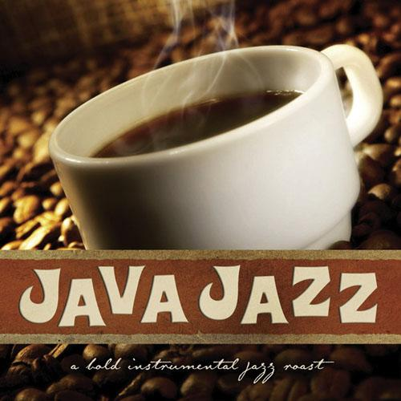 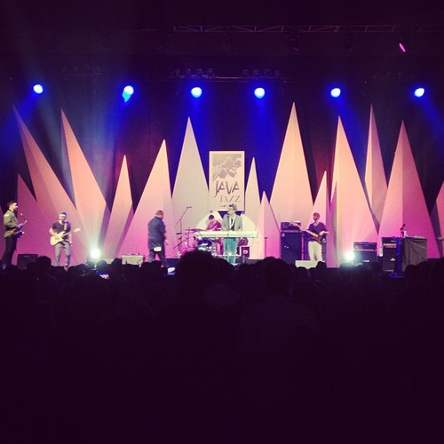 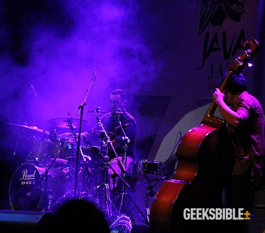 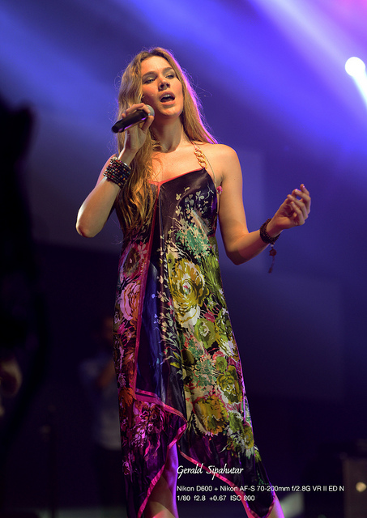 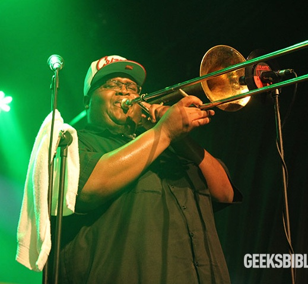
Album Foto
Java Jazz Festival 2013 3 Maret 2013
Melirik Kebudayaan Bali 17 Februari 2013
 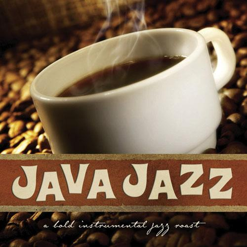
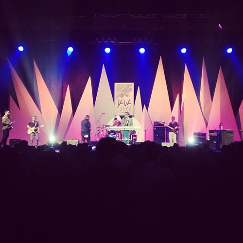
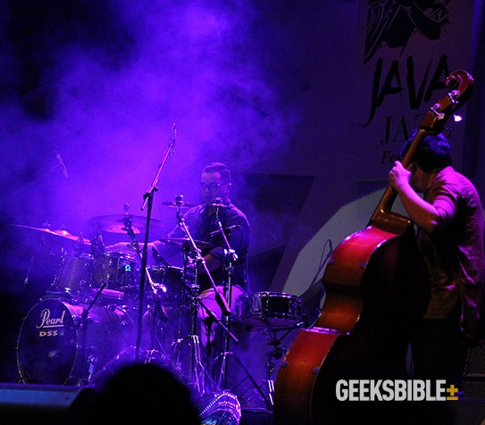
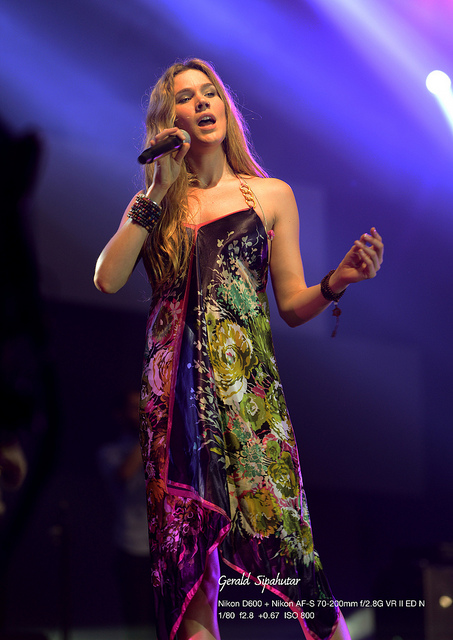
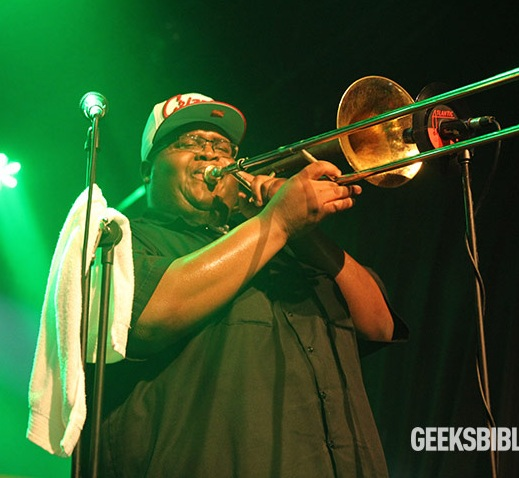
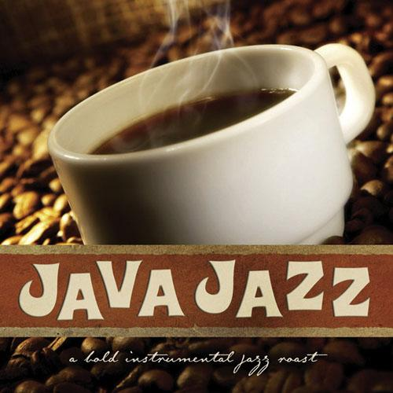
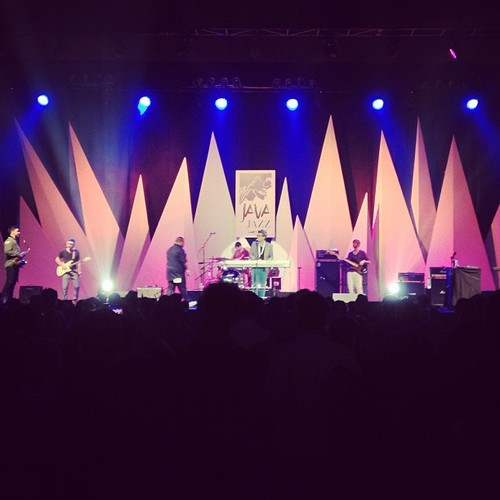
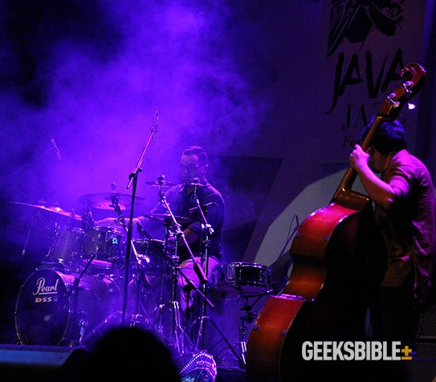
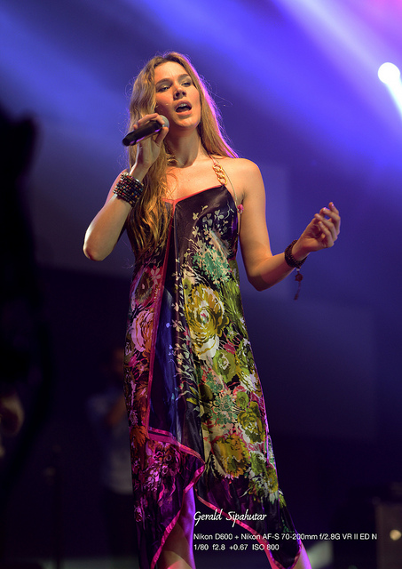
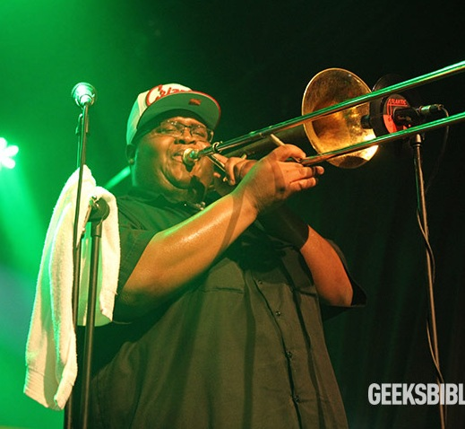
Berita Paling Banyak Dikomentari